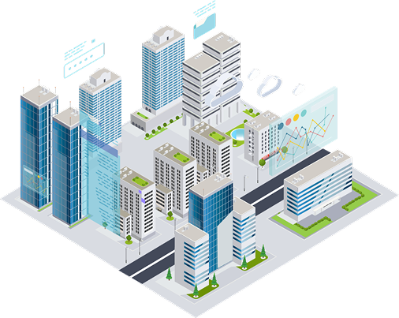
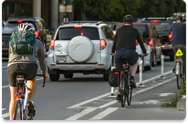

Uma cidade inteligente (smart city) é uma cidade que utiliza tecnologias digitais, sistemas de comunicação, sensores, internet das coisas (IoT), inteligência artificial e análise de dados para planejar, administrar e melhorar os serviços urbanos. O principal objetivo desse modelo é aumentar a qualidade de vida da população, tornando a cidade mais eficiente, sustentável, segura e inclusiva.

